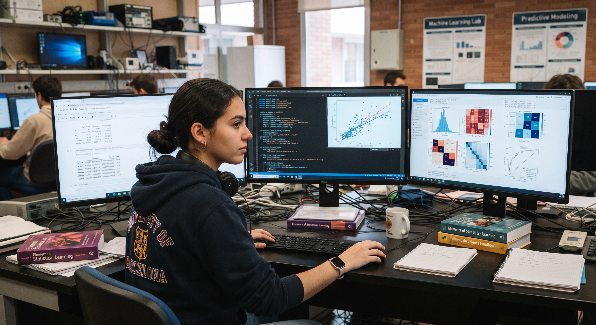
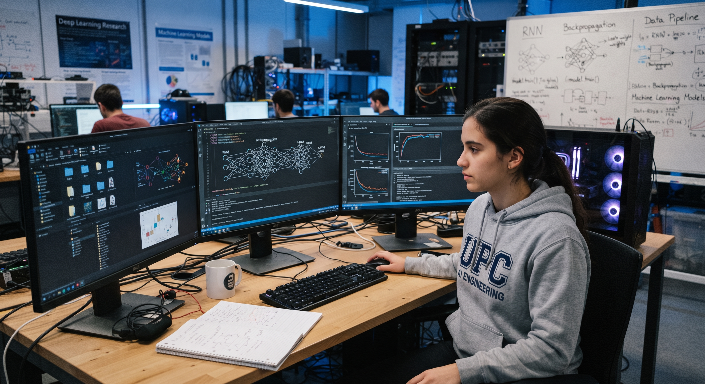
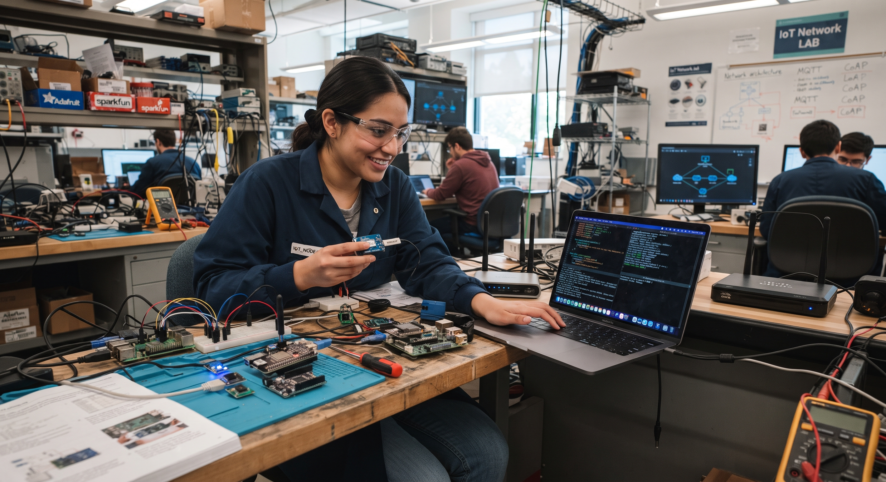
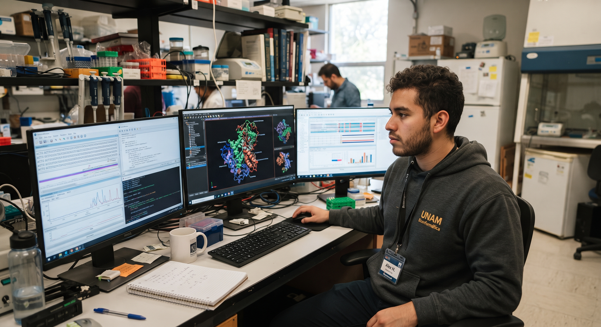

Nuestras Carreras de Vanguardia
Fórmate en las áreas con mayor impacto tecnológico e innovación del futuro con estándares internacionales.

Ingeniería en Robótica y Automatización
Especialízate en el diseño, control y programación de sistemas robóticos inteligentes, brazos mecánicos y automatización de procesos industriales.

Ingeniería en Ciencia de Datos
Domina el análisis predictivo, modelos matemáticos avanzados y minería de Big Data para transformar datos complejos en decisiones estratégicas.

Ingeniería en Inteligencia Artificial
Desarrolla algoritmos de Deep Learning, visión computacional y modelos de lenguaje natural que impulsan soluciones autónomas de alto rendimiento.
Ingeniería en Ciberseguridad
Aprende a proteger infraestructuras críticas contra ciberamenazas globales, ejecutar auditorías de hacking ético y diseñar protocolos de criptografía.

Ingeniería en Cloud Computing
Diseña arquitecturas en la nube escalables en AWS, Azure y GCP, automatizando despliegues continuos (CI/CD) y contenedores con Kubernetes.

Desarrollo de Videojuegos y VR
Crea mundos interactivos en Unreal Engine y Unity, integrando físicas avanzadas, renderizado 3D y experiencias inmersivas de Realidad Virtual.

Administracion en Infraestructura de Redes y Servicios (IoT)
Conecta dispositivos inteligentes, sensores y microcontroladores para desarrollar ciudades inteligentes, domótica y automatización industrial 4.0.

Ingeniería Civil en Informática
Lidera proyectos de transformación digital corporativa, ingeniería de software a gran escala y gestión estratégica de soluciones tecnológicas.

Ingeniería en Conectividad y Redes
Administra infraestructura de telecomunicaciones, redes 5G, enrutamiento avanzado y centros de datos empresariales de alta disponibilidad.

Ingeniería en Bioinformática
Combina la biotecnología con algoritmos computacionales para la decodificación genómica, modelamiento molecular e investigación biomédica.